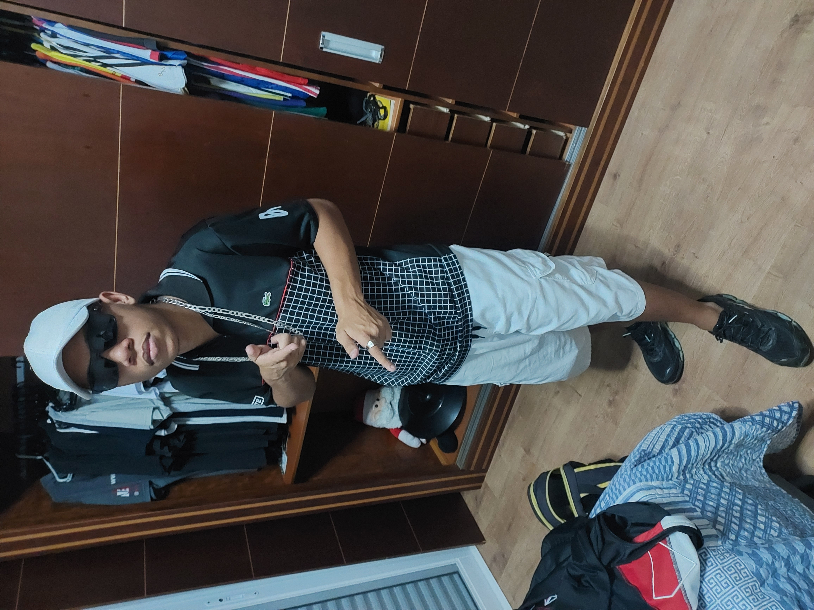
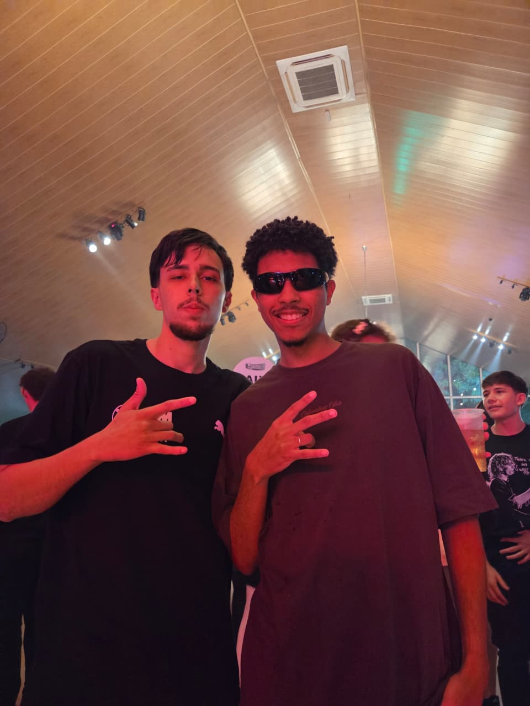
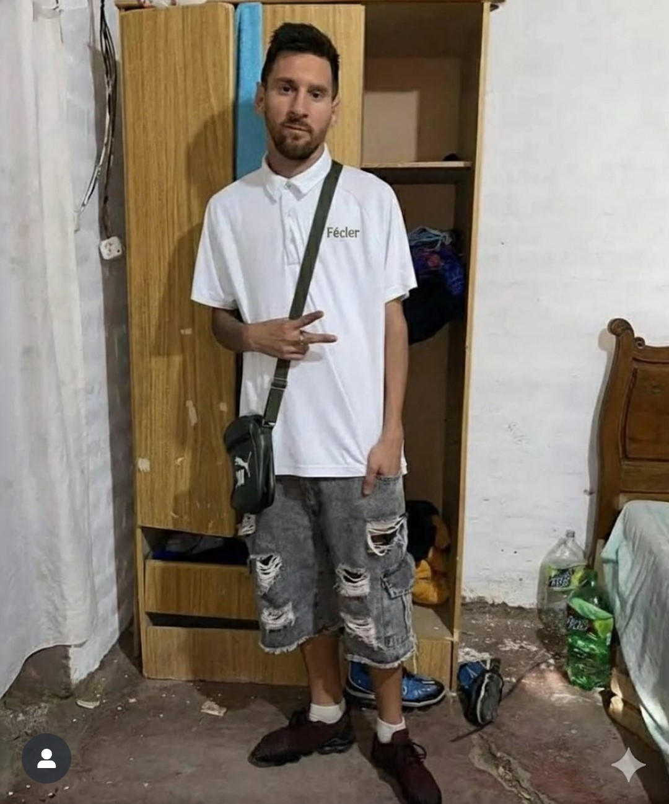

Julgando o Estilo dos Amigos da Boca
Sem palavras...

Kit estravagante do meu mano Jhow
Não há palavras em meu vocabulário para comentar sobre o traje esplêndito que o senhor Jonathan Roba Midía está usando no momento dessa fotografia.
simplesmente perfeito para a devida ocasião que o mesmo estava indo... CASARÃO.
cada detalhe desse kit me impressiona, começando pelo boné da LACTOSE que infelizmente o mesmo foi tomado no baile por trombadinhas pela sua elegancia, logo embaixo podemos ver o seu óculos estilo Raiban que passa um ar de tranquilidade e respeito para as pessoas ao redor. o caimento de suas roupas me desestabiliza, pensado exatamente para a estrutura óssea de seu magnifico corpo. a paleta de cores é simplesmente sensacional, a elegância que ela passa...
fora que a pose o ajuda a pegar todos os detalhes de seu poderoso traje para o destemido casarão !
Nota: 9,9
Faltou eu...

Nada muito chamativo
Pela Fotografia que vemos, nao conseguimos ver o corpo inteiro de nossos elementos, mas devida a ocasião em que a foto foi tirada a de se pensar que as pessoas do local estariam um pouco alterada, mas tudo bem...
voltando para as observações do traje discreto porém elegante dos meus garotos que não gostam dos holofotes.
podemos começar a falar do Vinicius que está com a sua larga camisa OVERSIZED que a cor nao consigo definir devido a qualidade e a cor do mesmo, logo mais em cima em seu pote temos o seu lindo óculos esportivo mas que hoje em dia os jovens do REAL TRAP estão adquirindo, que por sinal caiu muito bem em nosso amigo VINI GENTILIZA.
Logo ao lado esquerdo dele temos o Diogo que está simplesmente sendo o DIOGO (perfeito). SEM MAIS PALAVRAS SOBRE !
nota: 8.7
Pepssi

goat
O Messi que juntamente ao Jonathan, no momento dessa fotografia estava indo para o CASARÃO, acredito fortemente que os dois curtiram muito esse baile junto e tiraram várias fotinhas midias que nao podem ser reveladas devido a antonella, e pelo o que fiquei sabendo o Messi travou de lança no final do baile e fico feião com as novinhas depois... mas é isso bola pra frente monstro, to com voce sempre. o que falar do GOAT ?
eu fico sem saber como me expressar ao falar do meu idolo, que por sinal sabe se vestir adequadamente para qualquer ocasião, poderia facilmente ir assim receber a bola de ouro em cima do filho da puta do penaldo arrombado lixo imundo sem futuroo desgramado. perdi a paciencia já com esse merda.
voltando pra falar do goat achei sensacional a bagzinha que certamente está lotada de marijuana.
TCHAU !
Nota:1000000000000000000000000000000000000000000...